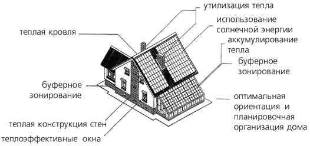
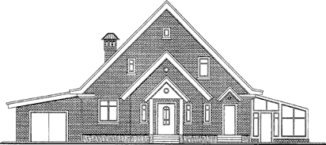
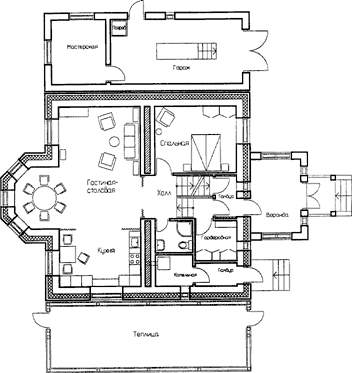
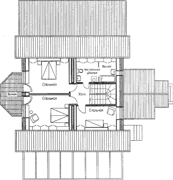
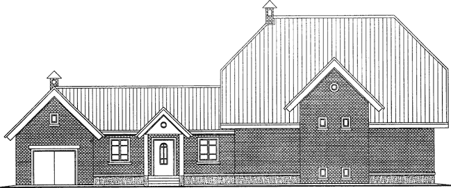
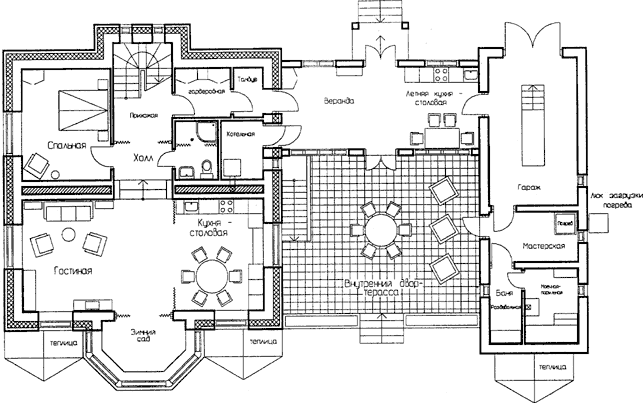

Ниже представлены рисунки оптимальных с многих точек зрения планировок двух домов. Рисунки взяты из книги Экодом в Сибири (И.А. Огородников).

Рис. 4.1. Пример дома с элементами солнечной архитектуры

Рис 4.2. Архитектура экодома-коттеджа. Внешний вид

Рис 4.2. Архитектура экодома-коттеджа. Планировка 1 этажа

Рис 4.2. Архитектура экодома-коттеджа. Планировка 2 этажа

Рис. 4.3 Архитектура экодома-подворья. Внешний вид

Рис. 4.3 Архитектура экодома-подворья. Планировка 1 этажа
© Prof1983 2007-2014
28.02.2010 - 22.04.2014